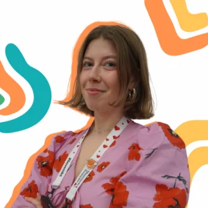
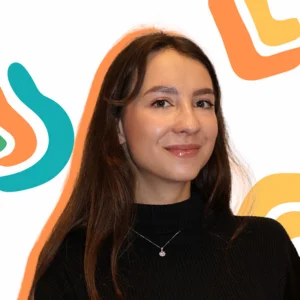
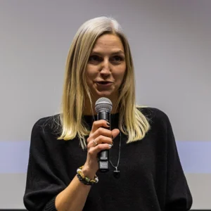
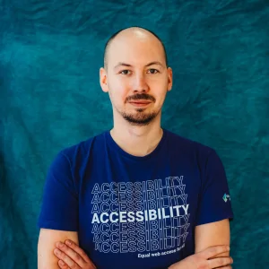
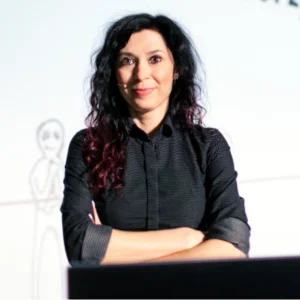
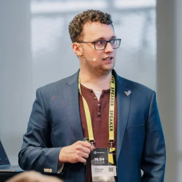
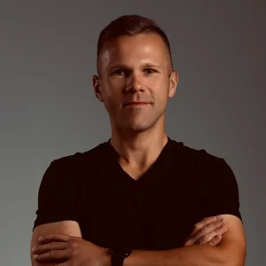
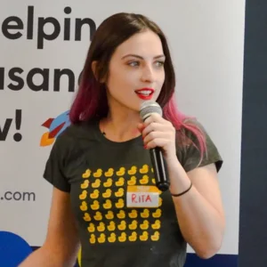

O inicjatywie
Głęboko wierzę w moc dzielenia się wiedzą. Kiedy w firmach trwa świąteczne rozluźnienie to jest to idealny moment na poszerzenie swojej wiedzy. Organizuję tę inicjatywę aby dać pozytywne wzmocnienie na koniec tego roku. Zależy mi aby każdy uczestnik oraz uczestniczka miała możliwość wzrosnąć w swoich kompetencjach oglądając wartościowe prezentacje. To właśnie dlatego zaprosiłem do współpracy grupę zróżnicowanych ekspertów wszelakich dziedzin informatyki. Niech ten czas będzie dla Was pełny inspiracji oraz motywacji do kolejnych działań.
Radek Wojtysiak, organizator
Wspieramy Pajacyka!
W ten świąteczny czas chcemy dać od siebie coś więcej. Chociaż nasze prezentacje na żywo są za darmo to zachęcamy Cię abyś dorzucił(-a) się do wybranej przez nas akcji charytatywnej. W tym roku wspieramy program Pajacyk organizowany przez Polską Akcję Humanitarną!
Jak wesprzeć?
- Kliknij na przycisk poniżej aby przejść na stronę fundacji Siepomaga
- Przelej dowolną kwotę do wirtualnej skarbonki naszej inicjatywy, która wspiera bezpośrednio zbiórkę Pajacyka z PAH!
- Poszerzaj swoją wiedzę oglądając przygotowane przez nas prezentacje
Poznaj prelegentów
{kind=link}
{kind=link}
Agenda
| Termin | Prelegent | Tytuł prezentacji | Playlista |
|---|---|---|---|
| 28.11 godz. 10:00 |
Radek Wojtysiak x SOLID.Jobs
|
Nie polegaj tylko na papierowym CV. Wykreuj swój profil kandydata na LinkedIn. | Wideo |
| 01.12 godz. 19:00 |
Radek Wojtysiak
|
Ceremonia otwarcia | Wideo |
| 01.12 godz. 19:30 |
Artur Skowroński
|
Z czym NAPRAWDĘ wiążą się Agentic AI na produkcji | Wideo |
| 02.12 godz. 20:00 |
Kamil Brzeziński
|
Jak się uczyć 3x szybciej w czasach, gdy utrzymanie skupienia jest 5x trudniejsze? | Wideo |
| 03.12 godz. 19:00 |
Natalia Kierczuk
|
Od pomysłu do kodu: jak powstają projekty IT w praktyce? | Wideo |
| 04.12 godz. 18:00 |
Aleksandra Kunysz
|
Prosta droga branży IT do wypalenia: Jak można pracować inaczej? | Wideo |
| 05.12 godz. 17:00 |
Weronika Witek
|
Jak uczyć się Google Cloud przy użyciu dostępnych narzędzi? | Wideo |
| 06.12 godz. 18:00 |
 Natalia Król Aleksandra Benowska |
Zacznij karierę w IT mówili ..., będzie fajnie mówili. Co Juniorom radzą pracodawcy? | Wideo |
| 07.12 godz. 18:00 |
Katarzyna Brzozowska
|
Kim będziesz za 5 lat? Jak odnaleźć się na rynku pracy w czasach rewolucji AI? | Wideo |
| 08.12 godz. 18:00 |
Krzysztof Kempiński
|
Marka osobista w IT. Jak ją zbudować i wykorzystać | Wideo |
| 09.12 godz. 19:00 |
Natalia Świątek-Nowak
|
Debugging kariery w IT | Wideo |
| 10.12 godz. 18:00 |
 Anna Karoń Rafał Guźniczak |
Filary dostępności na froncie - jak tworzyć dostępne aplikacje webowe | Wideo |
| 11.12 godz. 19:00 |
 Anita Przybył |
Tajna Broń w Twojej Karierze IT | Wideo |
| 12.12 godz. 20:30 |
Maciej Aniserowicz
|
Po 8 latach wróciłem do kodu dzięki LLMom i Gangowi Kodziaków | Wideo |
| 13.12 godz. 19:00 |
Bartosz Gałek
|
Open Source - dlaczego warto? | Wideo |
| 14.12 godz. 17:00 |
Cezary Sanecki
|
Z budowy do IT. Nie bój się działać! | Wideo |
| 15.12 godz. 19:00 |
 Aleksander Patschek |
MCP Deep Dive: od teorii po bezpieczne serwery z OAuth | Wideo |
| 16.12 godz. 19:00 |
Bartek Miś
|
Wydajny frontend z Google Tag Manager i Cookie Consent Mode V2 | Wideo |
| 17.12 godz. 17:00 |
Marcin Milewicz
|
Hello World, goodbye anonimowość, czyli budowanie marki osobistej programisty | Wideo |
| 18.12 godz. 20:00 |
Cezary Łysiak
|
Twój zespół nie potrzebuje strażaka. Potrzebuje architekta. | Wideo |
| 19.12 godz. 17:00 |
 Wojciech Trawiński |
10 tips to improve code review process | Wideo |
| 20.12 godz. 19:00 |
Kacper Koza
|
Jetbrains IDE: beyond the shift-shift | Wideo |
| 21.12 godz. 18:00 |
Anna Wójcik
|
Długo pracujesz w IT, a nadal nie czujesz się pewnie? Czas to zmienić! | Wideo |
| 22.12 godz. 18:00 |
Dominika Zając
|
Chrome DevTools | Wideo |
| 23.12 godz. 18:00 |
 Małgorzata Łyczywek |
ADR: dlaczego potrzebujesz Architecture Decision Record w swoim projekcie? | Wideo |
| 24.12 godz. 10:00 |
Radek Wojtysiak
|
Tajniki programistycznej rekrutacji technicznej | Wideo |
| 24.12 godz. 11:00 |
Radek Wojtysiak
|
Podsumowanie akcji | Wideo |